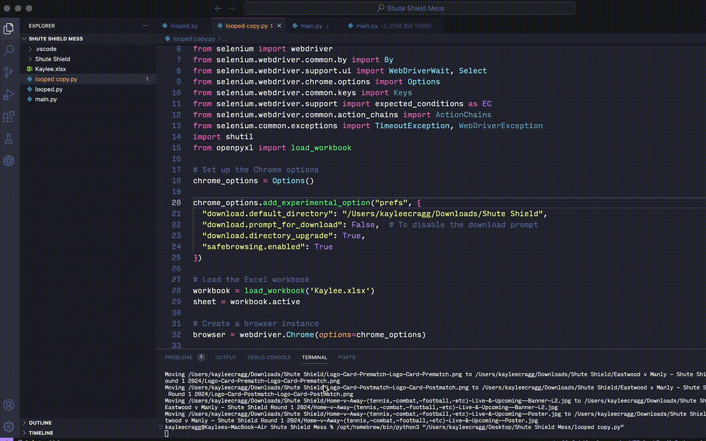
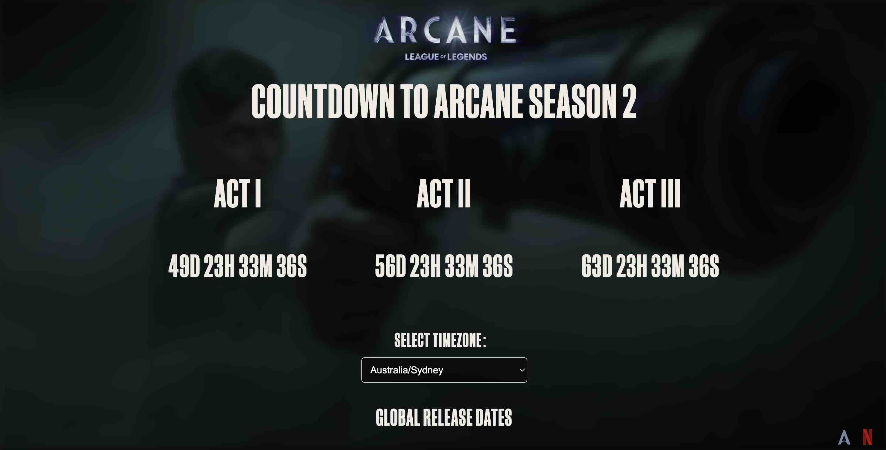
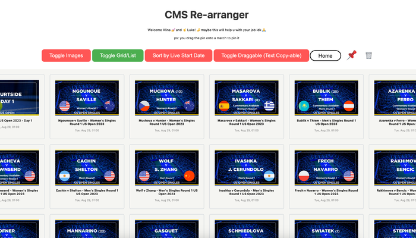

projects


kikibot
Colab GitHub- Designed and implemented a set of Jupyter notebooks to automate the creation and uploading of shells/assets and platform images, enhancing workflow efficiency tenfold.
- Scraped competition pages using Selenium + Puppeteer for easy acquisition of match and player data
- Widely used by my company’s live operations team to maximize efficiency and reduce the margin of human error during busy periods.
- Utilized Python, Selenium, Puppeteer and Google Sheets API to build the automation aspect of the bots, running fully functional on Google Colab to increase usability.


Arcane Season 2 Countdown
Website GitHub- Developed a Countdown website leading up to the 3 different acts of Arcane Season 2.
- Checks viewer's local timezone via Javascript and displays exactly what time the episodes will go live in their timezone.
- Allows users to check other timezones for when the episodes will go live.
- Responsive background feature that cycles through images and GIFs from the new trailers at random.

CMS re-arranger
Website- Developed a web app that acts as a CMS (content management system) tool to help organize large volumes of assets on Bebanjo Movida.
- Initially created to demo a non‑functioning tool to pitch to the workplace’s product team.